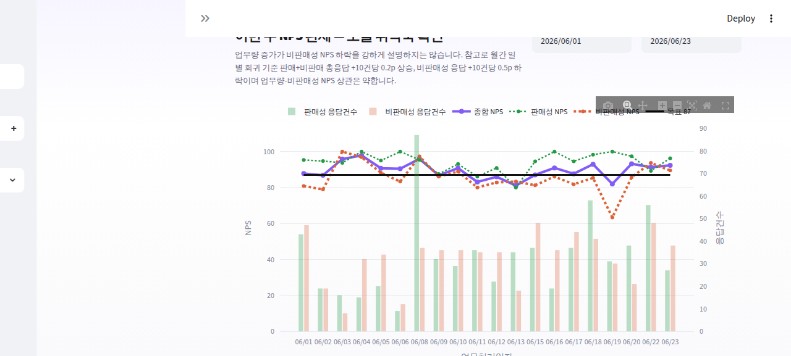
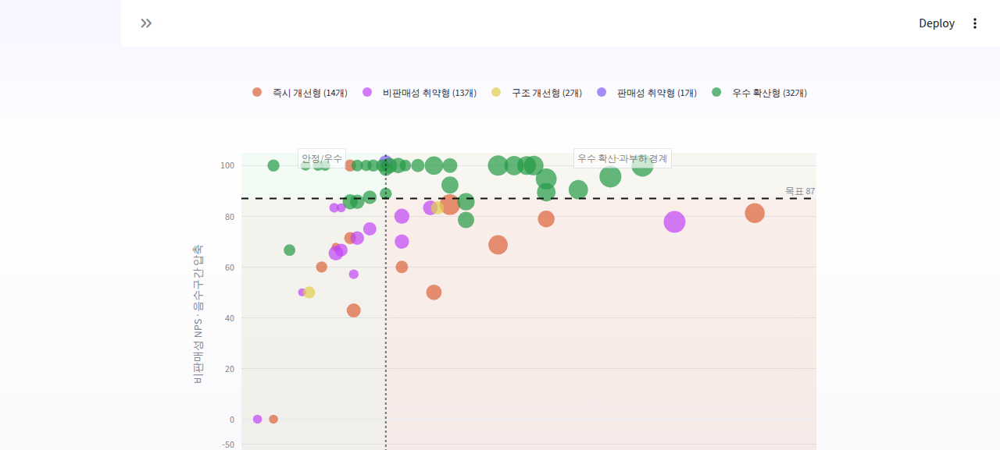
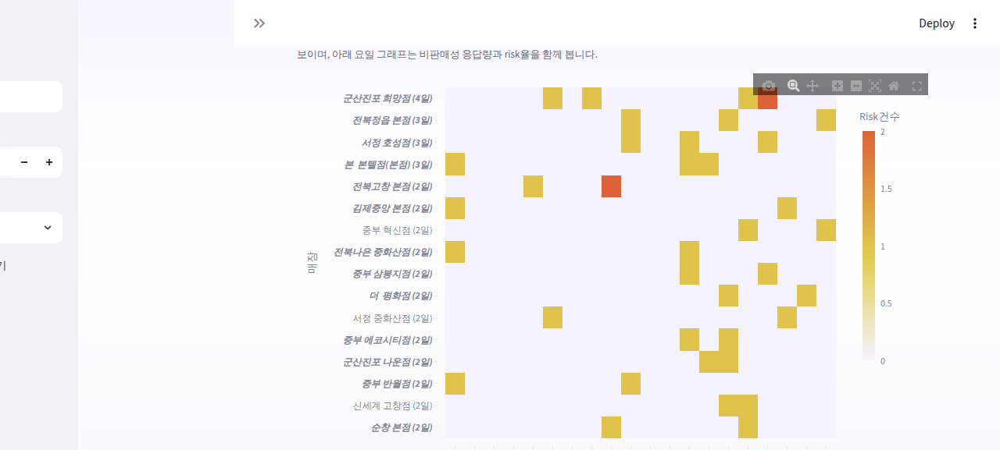
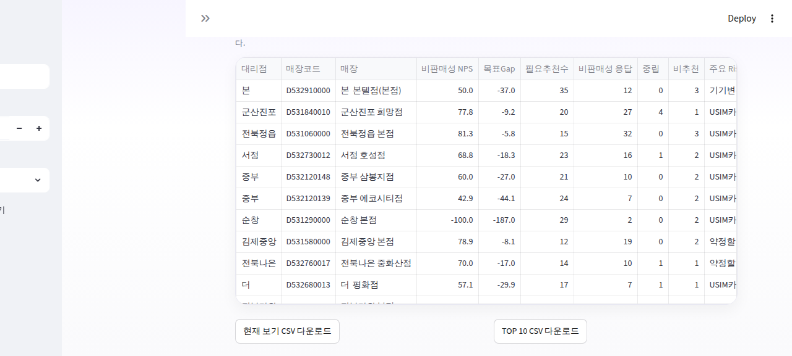

01 — Opening · cream canvas hero
전북팀 NPS 운영 Dashboard
01 / 15
OPENING MESSAGE
이 Dashboard는 NPS 점수표가 아니라,
현장 Coaching 운영판입니다
전체 평균이 목표권이어도, 매장별 비판매성 경험은 다르게 흔들릴 수 있습니다. 이 Dashboard는 그 흔들림을
찾아내고, 이번 주 어떤 매장을 어떻게 코칭할지 정리하기 위해 만들었습니다.
점수 확인→
Risk 발견→
Coaching Action
02 — Why We Built This · cream card
전북팀 NPS 운영 Dashboard
02 / 15
평균 NPS만 보면
현장의 문제 지점이 보이지 않습니다
평균 점수는 방향을 보여주지만, action list를 만들어주지는 않습니다. 현장 개선은 평균이 아니라 매장별 Risk와 VOC 근거에서 시작됩니다.
Before
- 종합 NPS 한 줄 확인으로 끝
- 좋은 평균 뒤 매장별 편차를 놓침
- 중립/비추천은 그냥 숫자로 남음
After — 이 Dashboard
- 판매성 / 비판매성 NPS 분리 확인
- 비판매성 Risk → 매장 → VOC → Coaching
- 중립/비추천을 코칭 출발점으로 전환
03 — Dashboard Reading Flow · dark
전북팀 NPS 운영 Dashboard
03 / 15
화면은 “관찰 → 해석 → 액션 → 확인”
순서로 읽습니다
화면은 길지만, 읽는 구조는 단순합니다. 판단 → 우선순위 발견 → 실행/검산 세 단계로 보면 됩니다.
01
판단
Operating Message → 이번 주 NPS 판세
오늘 취약축과 확인할 Risk를 먼저 잡습니다.
02
우선순위 발견
Risk Map → 반복 Hot Spot
먼저 볼 매장과 반복성을 함께 확인합니다.
03
실행 / 검산
Coaching Card → Drill-down/T크루 → Action Sheet → Audit
코칭하고, 공유하고, 데이터 신뢰도를 확인합니다.
관찰·해석·액션·확인을 한 번에 담되, 실제 사용자는 세 덩어리로만 기억하면 됩니다.
04 — Top Summary · cream + dark op-message
전북팀 NPS 운영 Dashboard
04 / 15
첫 화면에서 오늘의 판단을 먼저 봅니다
입구는 KPI가 아니라 오늘의 Operating Message입니다. “오늘 괜찮은가?”가 아니라 “오늘 어디를 먼저 봐야 하는가?”를 판단합니다.
Operating
Message
종합 NPS는 목표권 흐름을 유지하고 있지만, 비판매성 축 기준 월누적 위험매장이 있어 Care Priority 상위 매장부터 VOC와 업무유형을 확인해야 합니다.
05 — Weekly NPS Flow · cream card
전북팀 NPS 운영 Dashboard
05 / 15
이번 주 판세는 “오늘 취약축”을
찾기 위한 화면입니다
Trend는 과거 흐름을 보는 차트가 아니라, 오늘의 대응 우선순위를 정하는 입구입니다.
- 이번 주 종합 NPS가 목표권인지
- 오늘 취약축이 판매성인지 비판매성인지
- 오늘 중립/비추천이 몇 건인지, 그리고 오늘 실행 메시지가 무엇인지

Weekly Trend · 오늘 실행06 — Risk Map · cream card
전북팀 NPS 운영 Dashboard
06 / 15
비판매성 케어 우선순위는
Risk Map에서 찾습니다
전체 평균이 아니라, “비판매성 응답이 쌓였는데 NPS가 낮은 매장”이 이번 주 우선 케어 대상입니다.
차트 읽는 법
- X축 — 비판매성 응답 수
- Y축 — 비판매성 NPS
- Bubble — 전체 응답건수
- Color — Care 유형
- 우측 하단 = 먼저 확인할 후보
Care 유형
즉시 개선형비판매성 취약형구조 개선형
판매성 취약형우수 확산형

Risk Map · Care Priority07 — Care Priority · dark code-window
전북팀 NPS 운영 Dashboard
07 / 15
단순 Risk 건수가 아니라,
실행 우선순위를 봅니다
Care Priority는 “문제가 큰 매장”을 찾는 점수가 아니라, 이번 주 먼저 코칭해야 할 매장을 찾는 운영 점수입니다.
Risk 절대량
비추천·중립이 얼마나 발생했는가
Sample Confidence
표본이 충분한가, 소표본 착시는 아닌가
# 단순 Risk Top이 아니라 실행 우선순위
Care_Priority = Base_Risk_Score × Sample_Confidence
n이 작으면 확인은 하되, 과잉 일반화하지 않습니다. 그래서 “많이 나쁜 곳”보다 “이번 주 먼저 코칭할 곳”을 찾습니다.
08 — Repeated Risk (Hot Spot) · cream
전북팀 NPS 운영 Dashboard
08 / 15
Hot Spot은 “한 번 튄 건지,
반복되는 건지”를 확인합니다
Hot Spot은 더 많은 차트가 아니라, Risk Map에서 찾은 매장이 반복적으로 흔들리는지 확인하는 검증 장치입니다.
- 날짜 × 매장 heatmap — 중립/비추천 2일 이상 반복 매장만 표시
- 매장명 옆 (N일) = risk 발생일 수
- 굵은 기울임 매장 = Care Priority Top 20과도 겹치는 공통 action 후보

Hot Spot · 반복 Risk09 — Coaching Card · dark product mockup (4-zone)
전북팀 NPS 운영 Dashboard
09 / 15
Dashboard의 landing point는
매장별 Coaching Card입니다
매장별 상태 → VOC 근거 → 이번 주 액션 → 다음 확인 지표 순서로 읽는 최종 실행 단위입니다.
1 · 식별
매장명 · 대리점 · 담당 · 진단 유형 · Care Priority rank
2 · 상태
종합 NPS · 최근 7일/오늘 비판매성 NPS · 응답 / 추천 / 중립 / 비추천
3 · 우선 케어 이유
주요 Risk 업무 · 대표 VOC
4 · 이번 주 액션
코칭 checklist · 정량 목표 · 다음 확인 지표
10 — Drill-down & T크루 · cream card
전북팀 NPS 운영 Dashboard
10 / 15
매장 문제를 업무유형과
사람 단위 코칭 후보로 좁힙니다
Drill-down은 Action Card의 근거 확인이고, T크루 후보는 매장 코칭을 사람 단위로 좁히는 화면입니다.
비판매성 Drill-down
- 집중관리 매장 · 업무유형 Top
- 매장별 추이
- 판매성 양호 · 비판매성 취약 매장
T크루 Coaching 후보
- 개인 평가가 아니라 코칭 후보 탐색
- n≥5 기준 · 중립/비추천 · 목표 Gap
- 매장 코칭 시 확인 대상을 좁힘
주의: T크루 화면은 개인 평가표가 아닙니다. n≥5 기준에서 매장 코칭 시 확인할 후보를 좁히는 보조 화면입니다.
11 — Action Sheet · cream
전북팀 NPS 운영 Dashboard
11 / 15
공유와 실행 관리는
Action Sheet로 합니다
Coaching Card가 판단용이라면, Action Sheet는 공유와 실행 관리용입니다. dashboard에서 나온 판단을
현장 공유용 action list로 바꿉니다.
- 대리점별 필터 · Top 10만 보기 · CSV 다운로드
- 매장별 주요 Risk 업무 · 대표 VOC · 이번 주 액션 확인
- 회의 전 공유 자료로 바로 활용 가능

Action Sheet · CSV 다운로드12 — Audit Layer · dark
전북팀 NPS 운영 Dashboard
12 / 15
Audit은 판단 기준이 아니라,
데이터 신뢰도 검산입니다
Audit은 “누구를 코칭할까”를 정하는 화면이 아니라, “이 판단이 데이터상 설명 가능한가”를 확인하는 화면입니다.
# 운영 판단 기준
Source_NPS # 원천 Excel 값
Recalc_NPS ← count 기반 재계산 (판단 기준)
예: 순창 본점
판매성 Source-100Recalc100
비판매성 Source33.3Recalc-100
해석판매성보다 비판매성 VOC 확인
Audit에서 보는 것
- 원천 Excel NPS와 count 재계산 NPS가 크게 다른 매장
- 소표본 때문에 과잉 해석하면 안 되는 매장
- 필요 시 VOC 원문과 업무유형으로 재확인할 근거
Audit은 우선순위를 바꾸는 화면이 아닙니다. 앞의 판단이 데이터상 설명 가능한지 확인하는 검산 layer입니다.
13 — Weekly Operation · cream (4 steps)
전북팀 NPS 운영 Dashboard
13 / 15
매주 운영은 5분 review →
15분 coaching 준비로 충분합니다
1
오늘 상태 확인
5분
- Operating Message
- 오늘 취약축
- 중립/비추천 건수
2
우선 매장 확인
5분
- Risk Map
- Care Priority Top
- 반복 Hot Spot 겹침
3
Coaching Card
10분
- 상위 매장 Action Card
- 대표 VOC
- 이번 주 액션 문구
4
공유 / 점검
5분
- Action Sheet 다운로드
- 대리점별 공유
- 다음 확인 지표 설정
Dashboard를 오래 보는 것이 목적이 아닙니다. 짧게 보고, 정확히 코칭하고, 다음 지표로 확인하는 것이 목적입니다.
14 — What Changes for the Team · cream card
전북팀 NPS 운영 Dashboard
14 / 15
팀 운영은 감이 아니라
evidence-based coaching으로 바뀝니다
Before
- 종합 NPS 중심 확인
- 문제가 생긴 뒤 사후 확인
- 코칭 대상이 경험과 감에 의존
- VOC 원문과 action이 분리됨
After
- 판매성/비판매성 분리 · 조기 발견
- Care Priority 기반 대상 선정
- VOC 근거와 action이 한 화면에 연결
- Action Sheet로 공유/점검 가능
이제 NPS는 결과 점수가 아니라, 현장 코칭을 설계하는 입력값이 됩니다.
15 — Closing · coral callout
전북팀 NPS 운영 Dashboard
15 / 15
NPS를 보는 목적은 점수 해석이 아니라,
다음 action 결정입니다
이 Dashboard는 좋은 점수를 보여주기 위한 화면이 아닙니다. 어디에서 고객 경험이 흔들리는지 찾고, 이번 주 어떤 코칭을 할지 결정하기 위한 전북팀 운영판입니다.